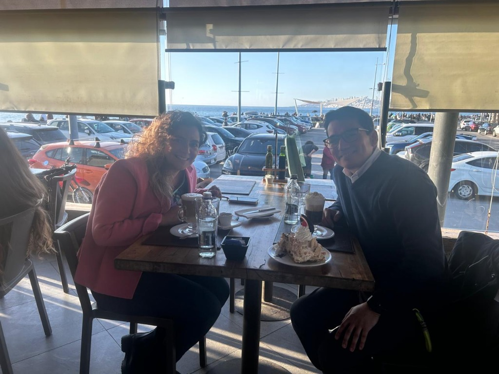
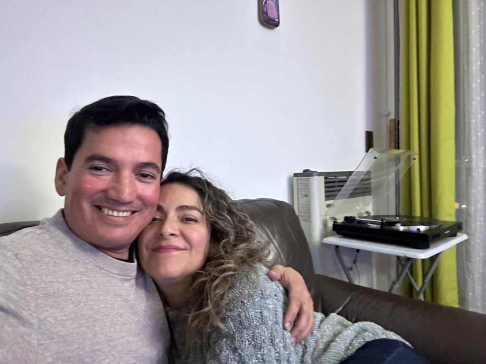
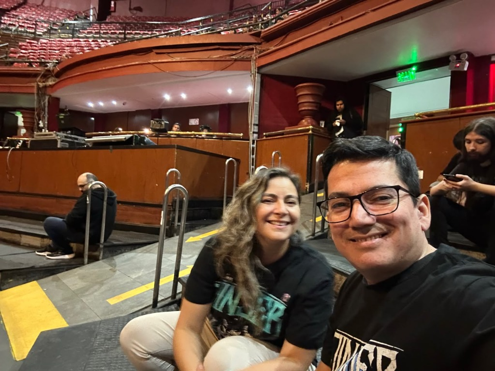
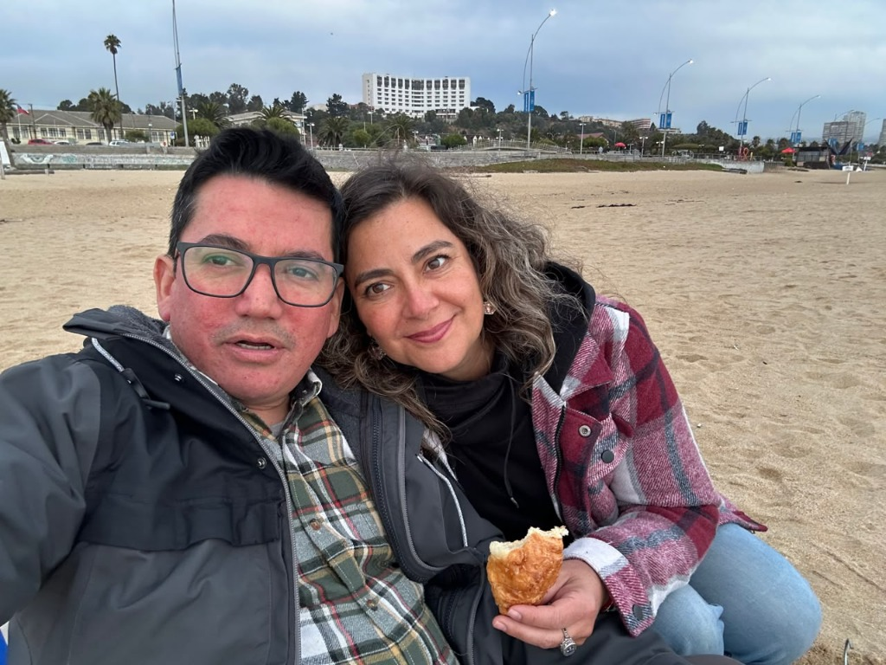
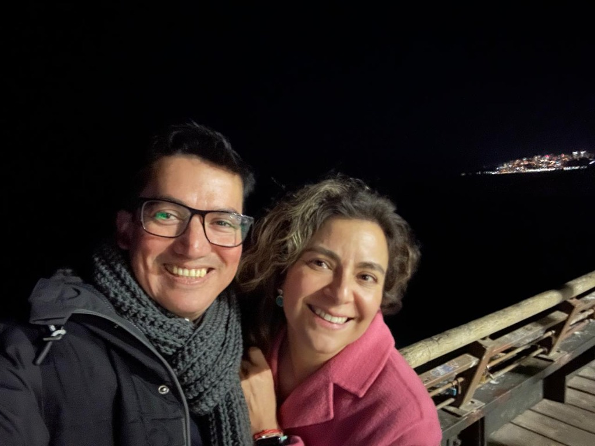
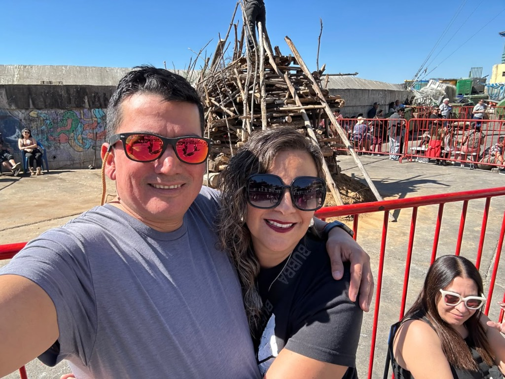
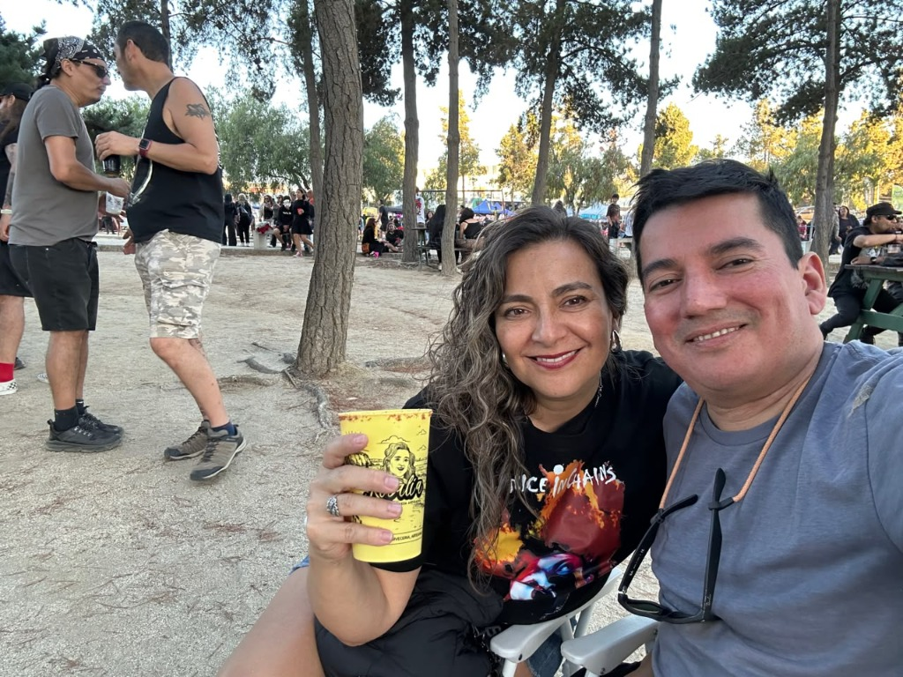
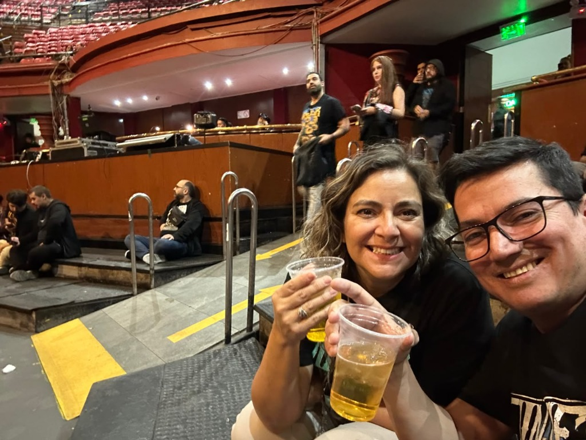

1. NUESTRA PRIMERA CITA • AGOSTO 2025
CAFÉ FRENTE AL PACÍFICO
"Nuestra primera cita en Viña del Mar, compartiendo torta, café y miradas que lo cambiaron todo."
"Hay personas que llegan haciendo ruido. Y hay otras que llegan como la lluvia sobre el mar de Viña: silenciosas, inevitables y capaces de cambiar el paisaje sin pedir permiso."
Rodrigo llevaba años resolviendo problemas. Servidores caídos, plataformas complejas, dashboards, Kubernetes, Dynatrace... Su mente era un mapa de conexiones. Había aprendido que casi todo podía explicarse con lógica.
Hasta que apareció Carmen Gloria.
Ella no venía a resolver ecuaciones. Venía a enseñar niños, a crear, a pintar emociones donde otros solo veían dificultades. Tenía esa forma de mirar el mundo que no necesitaba algoritmos para encontrar belleza.
"Y ahí empezó todo."

"1. Nuestra primera cita en el café frente al mar..."

"Tardes de vinilos, tocadiscos y abrazos..."
Mientras Rodrigo afinaba una Les Paul para tocar un riff de rock, Carmen afinaba el corazón de quienes la rodeaban con una paciencia infinita. Eran diferentes, pero precisamente por eso parecían piezas de un mismo rompecabezas.
Con el tiempo llegaron las conversaciones interminables, las bromas, los días buenos y los días difíciles. Hubo momentos de incertidumbre, de trabajo intenso, de reconstruir proyectos, de pensar en el futuro una y otra vez.
Rodrigo soñaba con empresas, inteligencia artificial, nuevas tecnologías y proyectos que aún no existían. Carmen soñaba con personas, con hacer del mundo un lugar un poco más amable para quienes más lo necesitaban.
"Había días en que el cielo de Viña del Mar amanecía gris. Esos días eran perfectos para una película de terror, una taza caliente y alguna conversación absurda que terminaba en carcajadas."
Estaban las mañanas en que Rodrigo buscaba la forma perfecta de desearle un buen día. No un simple "buenos días", sino una nota que hiciera sonreír antes de empezar la jornada.
Porque las grandes historias nunca se escriben con gestos enormes. Se escriben con preguntar cómo estuvo el día, recordar una canción o compartir el silencio sin que resulte incómodo.
Saber estar presente con fe ciega: creer en el otro incluso cuando el otro duda de sí mismo.
La canción que nos acompaña. Haz clic abajo para escuchar la versión oficial.
Había una imagen que parece resumirlos:
Él, con una guitarra entre las manos, preparando los primeros acordes de una canción que lleva años esperando tocar completa.
Ella, escuchando antes de cantar.
"Porque las mejores canciones no empiezan cuando suena la primera nota.
Empiezan cuando alguien decide quedarse a escuchar."
Quizás por eso su historia nunca ha sido una línea recta. Ha sido como el mar frente a Viña: a veces tranquilo, a veces bravo, pero siempre regresando a la orilla.

"Brindando en el recital por nuestra música..."
Desde nuestra primera cita en el café hasta cada concierto y tarde en casa.
"Nuestra primera cita en Viña del Mar, compartiendo torta, café y miradas que lo cambiaron todo."

"Frente a las olas de Viña del Mar, disfrutando de la brisa marina juntos."

"Noches heladas junto al muelle, abrigados y sonrientes frente a las luces del puerto."

"Lentes polarizados, la fogata costera y la calidez del abrazo."
"En el sillón de casa, escuchando vinilos juntos y encontrando la paz absoluta."

"T-shirts de rock, un vaso de cerveza y la música al aire libre."
"En las graderías del teatro, festejando con cerveza helada y canciones inolvidables."

"Copas en alto y sonrisas radiantes en el balcón del show."
"Dos mundos distintos que aprendieron el mismo idioma: el amor. ♡"
Ingeniero, curioso, apasionado por la tecnología, Kubernetes, Dynatrace y los desafíos imposibles. Ve sistemas donde otros ven problemas.
Afinaba una Gibson Les Paul y también ideas que podían cambiar el mundo. Sueña en grande. No se conforma. Siempre busca aprender, mejorar y construir. Y encuentra su máxima serenidad en el café frente al mar con Carmen Gloria.
Docente, artista, luz para muchos niños que solo necesitaban alguien que creyera en ellos.
Convierte "No puedo" en "Inténtalo una vez más". Tiene ese don que no se enseña en libros: ver lo mejor de cada persona. Su creatividad, su corazón y su fuerza hacen de cada día algo extraordinario.
Un libro especial que disfrutamos y compartimos juntos, alimentando nuestras conversaciones y tardes de lectura.
Y si algún día alguien preguntara cuál fue el verdadero secreto de Rodrigo y Carmen Gloria, probablemente la respuesta sería muy sencilla:
No fue la suerte.
No fue el destino.
Fue elegir, una y otra vez, caminar en la misma dirección, aun cuando el camino cambiaba.
Porque el amor no siempre consiste en encontrar a la persona perfecta.
A veces consiste en encontrar a alguien con quien incluso los días ordinarios terminan convirtiéndose en recuerdos extraordinarios.
"Y quizás esa sea la mejor definición de ustedes.
No una historia perfecta.
Sino una historia que todavía se sigue escribiendo."
Gracias por creer en mí incluso cuando ni yo lo hacía.
Gracias por tu paciencia, tu ternura y tu fuerza.
Gracias por tu risa, por tu luz y por hacer de lo ordinario algo mágico.
Gracias por quedarte.
Por elegirme.
Por caminar conmigo.
No sé qué nos espera mañana, pero sí sé que mientras estés a mi lado, todo tendrá sentido.